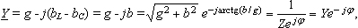
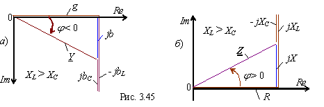
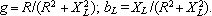

- активная и реактивная проводимости цепи;
bL = XL/Z2 и bC = XC/Z2 - индуктивная и емкостная проводимости RLC-цепи.
Итак, комплексная (полная) проводимость RLC-цепи
 |
(3.70) |
где и φ = arctg - модуль и аргумент комплексной проводимости цепи. На рис.2.44 представлен треугольник проводимостей RLC -цепи на комплексной плоскости.
Примечания.
1. Анализируя выражение комплексного сопротивления цепи и её комплексную проводимость (Z = R + j(XL - XC) = Zejφ и Y = g - j(bL - bC) = Ye-jφ) и сравнивая соответствующие диаграммы рис. 2.43 и рис 2.44, построенные на комплексной плоскости, отметим, что они имеют разный знак угла j.
2. При этом, чем больше модуль комплекса Z последовательной RLC-цепи (ветви), тем меньше модуль её комплексной проводимости Y; однако, чем больше составляющая R (XL или XС ) комплекса Z цепи, тем больше соответствующая проводимость цепи. Например, при XL > XС, индуктивная проводимость ветви больше ёмкостной проводимости, т. к.

и обратно (см. рис. 2.45а и б).
3. Если ветвь содержит только резистивный элемент R, то активная проводимость ветви равна g = 1/R; реактивная проводимость ветви равна b = 1/X, если ветвь содержит только реактивный элемент Х.
4. Если ветвь содержит активный и реактивный элементы, то активная и реактивная проводимости, например, последовательной RL-цепи (рис. 3.46) равны:
